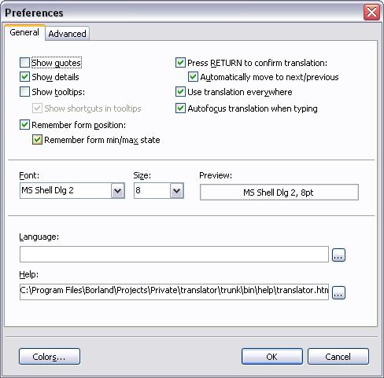

The Preferences Dialog
Select Preferences (Alt+Enter) from the menu to display the
Preferences dialog.

The available options in the dialog are:
-
Show Quotes
- The Show Quotes options can be used to easier see where strings starts and
ends. This is particularily important when the string contains leading and
trailing white-space. Since the program normally trims off trailing (but not
leading) spaces, the Show Quotes option is the only way to preserve trailing
spaces. The quotes are for display purpose only: they are not saved with the
string. If you inadverently delete one or both of the quotes this is alright
too: the program detects that the quote(s) are missing and adjusts accordingly.
-
You can also enable/disable this option from the main menu (Ctrl+Q)
without opening the dialog.
-
Invert dictionary
- Same as the Invert dicitionary on the main menu. Enabling this option swaps the
currently loaded items in the dictionary so you can use the dictionary to
translate "the other way" as well.
- Note that the inversion stays in effect if you save the dictionary and also
when you load another dictionary (i.e if Invert Dictionary
is
enabled, the newly loaded dictionary will be inverted as well).
- You can also enable/disable this option from the main menu (Ctrl+Alt+I)
without opening the dialog.
- Show details
- If enabled, displays a panel beneath the toolbar that shows the Section and Key
of the currently selected item.
-
You can also enable/disable this option from the main menu (Ctrl+D)
without opening the dialog.
- Show tooltips
- Display tooltip windows for toolbar buttons.
-
Show shortcuts in tooltips
- Displays the shortcut of the toolbar button in the tooltip. This option can
only be changed if Show tooltips is enabled.
- Ignore &'s in dictionaries
- If checked, '&' characters are ignored when comparing dictionary entries to
the original string. This enables you to have a dictionary entry like
'&Edit' and use it to replace a translation entry like 'Edit'.
- Use same start folder for all files
- Enable this option if you want the open translation dialog to "chase" the
original dialog (and vice versa). This can be hard too understand, but an
example might clear it up:
-
Let's say you have a couple of files opened in your
C:\Program
Files\Translations folder. Now you want to open another set of files in
the D:\Other\Translations folder instead. Click Open Original
(Ctrl+O) and browse to the D:\Other\Translations and select
a file as usual.
Next, a dialog is shown for the translation file. With the
"same folder" option enabled, the start folder for the dialog will be
D:\Other\Translations.
With the option disabled, the start folder will be C:\Program Files\Translations.
- Autofocus translation when typing
- When activated, typing in the list will move focus to the translation field
where your typing replaces the selected text.
- Press RETURN to confirm translation
- Normally, a translation is saved as soon as you move to another item. Enable
this option to use the RETURN (ENTER) key to confirm the translation without
having to move to another item.
- Automatically move to next/previous
- Enable this option to automatically move to the next item when RETURN is
pressed. Press Shift+RETURN to move to the previous item instead. This option
can only be changed if Press RETURN to confirm translation is
enabled.
- Remember form position
- Enable this option if you want the program to remember the main windows
position when you close it.
- Remember min/max state
- Enable this option if you want the program to remember if the window was
minimized/maximized as well. This option can only be changed if
Remember
form position is enabled.
- Monitor external file changes
- Turns file monitoring on or off. If enabled, external changes to the currently
loaded files (original, translation and dictionary) are monitored and you are
prompted to reload the file(s) when they have changed.
- Use translation everywhere
- When activated, a newly typed translation will be copied to all other items
with an identical original identifier. This is like using the "Use
translation everywhere" command without having to press Ctr+Shift+H all
the time.
- Font
- Changes the font used by the edits and the listview in the program. Click the
button to display a font selection dialog. The font settings are saved and used
the next time you start the program.
-
You can also enable/disable this option from the main menu (Ctrl+Shift+F)
without opening the dialog.
- Language
- Select or type in the path and filename of the language file yu want to use for
the program. Click the browse button (...) to show a dialog that allows you to
select a file. Restart the program to use the selected language file.
- Help
- Select the file to be used as the help file for the program. Click the browse
button (...) to show a dialog that allows you to select a file. Press
F1 in the program to display the help file. Note that you can select any type of
file as the help file, not only chm or hlp files. When you press F1, the file
will be opened with the program associated with the selected file type.